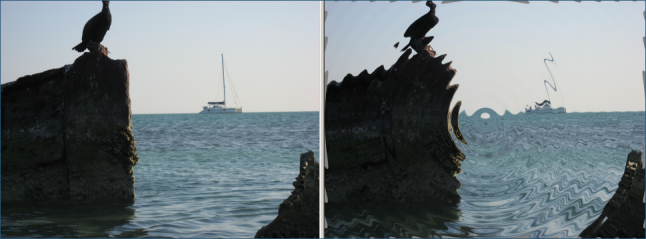

You can specify the wave height, frequency (how close they are together), attenuation (how fast
the waves die out as they expand), and phase (the position of the waves relative to the center
point.)
You can also specify the background color, which may appear near the edges of the photo.
